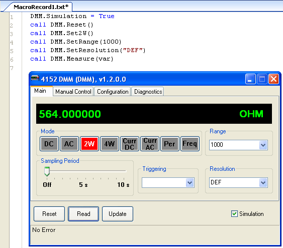

The Macro Record feature is used to automatically create VBScript API calls into a driver. When Macro Record is enabled, the operations performed on a driver's GUI are translated into the corresponding VBScript property or method calls and recorded to a Macro Record document.
To begin recording, select "Start Macro Record" from the Tools menu:
A blank Macro Record document appears within the IDE.

Once Macro Record is started, all method calls and all calls to a property's set
statement are recorded to the Macro Record document in the correct VBScript
format.

Tip: Some methods take a reference variable as a parameter which is to be
used as an output of the method. This variable must be declared before
passing it to the method, and when the method returns this variable will hold
the result of some operation. In the Macro Record output, "var" is used as
a placeholder for a reference variable. Wherever you see "var", you will
need to declare a variable to pass by reference to that method.
Example:
We get this method call in our Macro Record output:
call DMM.Measure(var)
If we are going to use this method call in our test program, we would need to declare a variable to pass by reference:
Dim result
call DMM.Measure(result)
When the method returns, the
variable "result" will hold the result of the DMM measure operation.
Tip: Most of the driver methods return an integer error code (usually a return value of zero signifies no error and a negative value means an error occurred). The Macro Record output does not include variables to hold this return value. To capture a method's return value, you will need to declare a variable and use it when calling the driver's method.
Example:
We get this method call in our Macro Record output:
call DMM.Reset()
We would like to know if the
Reset was successful, so we will look at the return value of the method:
Dim errorCode
errorCode = DMM.Measure(result)
When the method returns, we will usually want to check the error code to determine if an error occurred:
If (errorCode <> 0) Then
' An error
occurred. Handle accordingly.
End If
To stop Macro Record, select "Stop Macro Record" from the Tools menu.

The Macro Record document remains open after Macro Record has stopped. To use the recorded VBScript API calls within a test program, select the desired text in the Macro Record document and copy and paste it into the correct function in the test program.
Selecting "Start Macro Record" again will open a new document to begin recording.
Astronics Test Systems
Last updated on 3/5/07 by L. Anhalt